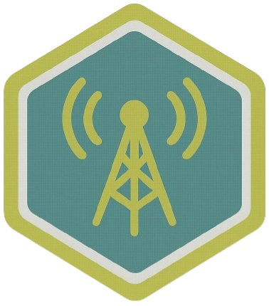

ZZX-LABS R&D // SOFTWARE
ISRN
ISRN is a decentralized P2P radio streaming platform and relay network — resilient, signed, and self-hostable; designed for 24/7 internet radio with metadata-synced playlists and station management.
INTERNET RADIO // RELAY
ISRN Station Workbench
PLAYLISTSCHEDULESIGNED MANIFESTFFMPEG: NATIVE
| Start UTC | End UTC | Title |
|---|